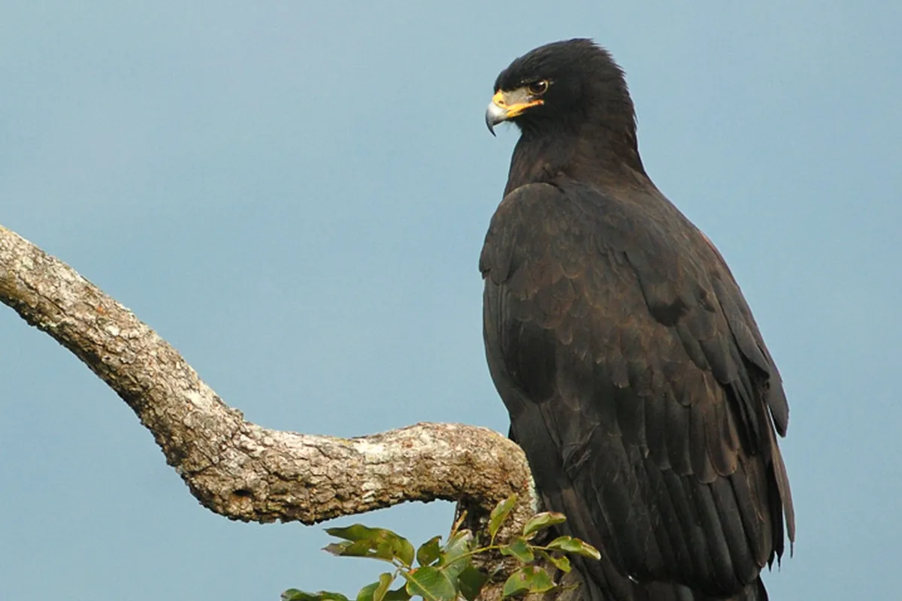

Burung
Elang Hitam
Ictinaetus malaiensis (Temminck, 1822)
IUCN: Least Concern
Halaman ini dapat digunakan sebagai tujuan kode QR di sepanjang jalur Curug Siluwok.
Ciri-ciri
Elang besar dengan panjang sekitar 65–80 cm dan bentangan sayap hingga kurang lebih 150–180 cm. Tubuhnya hitam kecokelatan, sayapnya panjang dan lebar, serta kakinya kuning dengan cakar kuat.
Habitat
Hutan primer dan sekunder, perbukitan, pegunungan, tepi hutan, lembah, dan kawasan berhutan dekat aliran sungai.
Makanan
Mamalia kecil, tupai, ular, kadal, katak, burung kecil, dan telur burung.
Bunyi
Siulan panjang dan melengking yang dapat terdengar dari ketinggian.
Peran Ekologis
Berperan sebagai predator puncak yang membantu mengendalikan populasi mamalia kecil, reptil, dan burung.
Fakta Menarik
Mampu mengambil telur atau anak burung langsung dari sarang ketika terbang di antara pepohonan.
Referensi & Kredit Foto
Dokumen Konten Katalog SidoBird, Tim KKN Sarga Dharma.
FotograferBelum ditentukan
Sumber fotoBelum dicantumkan
LisensiBelum dicantumkan